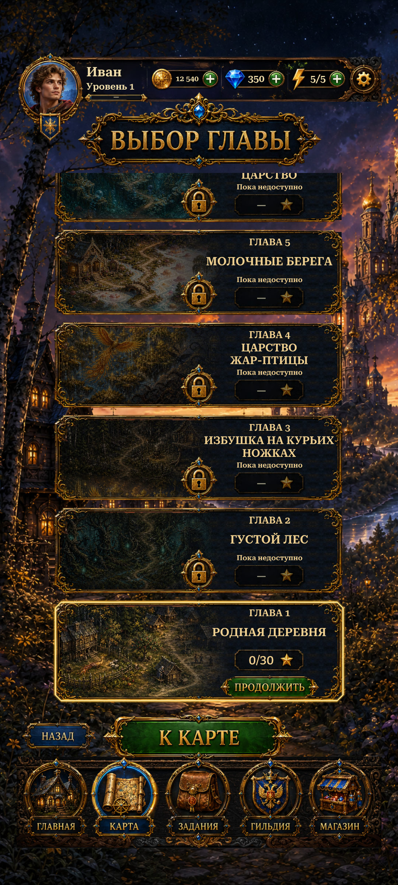

Shared header and title follow the safe top; Back, chapter action and navigation follow the safe bottom. The masked chapter viewport expands between them, preserving artwork size, scroll progress and later-chapters-above ordering.
Actual Unity Play Mode captures with isolated saves and simulated phone sizes/safe areas. Choose Before R5 to compare. This is a capture viewer, not an interactive build.
